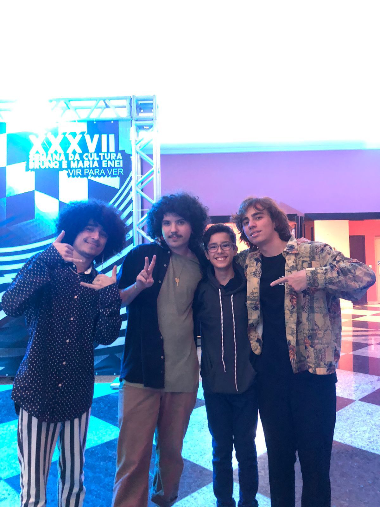
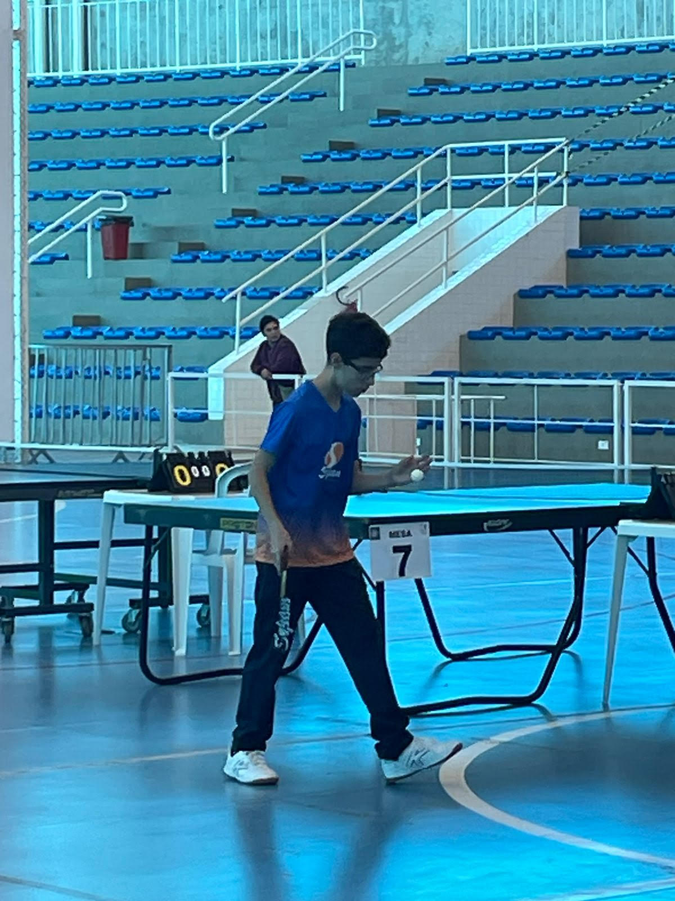

1

2

3

4

Meu nome é João Felipe, tenho 13 anos sou mesatenista a 2 anos, curso programação e tenho pais separados.Vou falar sobre a minha carreira no Tênis de mesa, começei em 2021 e continuo até hoje.Participei do jem e 3 torneios e tenho um carinho pelo torneio que joguei na arena multiuso que fiquei entre os 16 melhores pelo colégio Sepam.
Meus contatos são:Email:joaodecarvalhopradk@gmail.com. Número:999162-1552. GitHub: joaofelipe02
Sou estudante do colégio Sepam a 3 anos estou no 8° ano e minha matéria favorita é: história
Meus projetos futuros são:comprar um computador(de preferencia notebook) potente, passar de ano(importante) me dedicar mais no tênis de mesa(lazer).
Nasci no dia 24/05/2010, meu nome completo é João Felipe de carvalho do Prado, tenho pais separados minha guarda e de minha irmã são compartilhadas e temos liberdade de escolhermos onde ficar. Desde pequeno gostava bastante da área de computação, hoje faço um curso de programação na odonto excellence com ótimos professores e tenho bons colegas ao meu lado. Sou muito curioso sobre desastres que aconteceram na história do mundo(como o Titanic e o 11 de setembro). Nunca passei necessidade na vida nem os meus pais. Minhas bandas favoritas são: Guns n Roses e Hoovaranas. E por fim tenho 3 gatos.